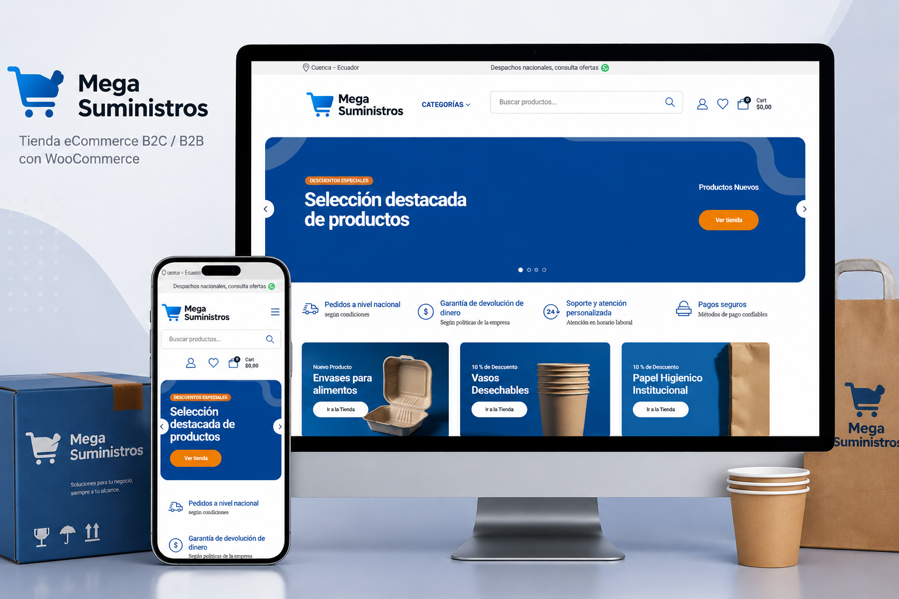
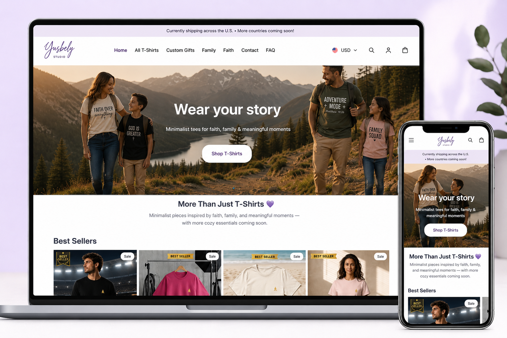

MegaSuministros
Desarrollo de tienda online utilizando WordPress y WooCommerce, enfocada en mejorar la experiencia de compra y administración del negocio.
Soy Ingeniera de Sistemas especializada en desarrollo web, UX y soluciones digitales. Ayudo a empresas y proyectos a crear experiencias funcionales, organizadas y centradas en las personas.
A lo largo de mi trayectoria he participado en proyectos de desarrollo web, ecommerce y transformación digital, integrando análisis funcional, tecnología y experiencia de usuario para crear soluciones claras, eficientes y alineadas con los objetivos del negocio. Mi enfoque combina pensamiento analítico, organización y creatividad para conectar las necesidades de las personas con soluciones digitales funcionales.
Cada proyecto representa un proceso de análisis, diseño e implementación de soluciones digitales enfocadas en usuarios y objetivos de negocio.

Desarrollo de tienda online utilizando WordPress y WooCommerce, enfocada en mejorar la experiencia de compra y administración del negocio.

Creación de una marca ecommerce para mercado estadounidense integrando Shopify, Printify, estrategia digital y experiencia de usuario.

Diseño y desarrollo de mi portafolio profesional aplicando UX Design, arquitectura web y un sistema visual escalable.
Experiencias profesionales donde participé en desarrollo web, infraestructura tecnológica y soluciones digitales.
Cada proyecto comienza entendiendo el problema y termina creando experiencias digitales claras, organizadas y centradas en las personas.
Analizo necesidades, objetivos del negocio y usuarios para definir la dirección del proyecto.
Creo estructuras y experiencias digitales pensadas para facilitar la interacción.
Construyo soluciones web y ecommerce utilizando tecnologías adecuadas.
Mejoro rendimiento, documentación y experiencia para una evolución continua.
Desarrollo experiencias digitales combinando tecnología, diseño y estrategia para crear soluciones funcionales y enfocadas en resultados.
Creación de sitios web modernos, funcionales y optimizados para diferentes necesidades digitales.
Desarrollo y optimización de tiendas online enfocadas en experiencia de usuario y conversión.
Análisis y mejora de experiencias digitales para crear productos más claros e intuitivos.
Si buscas una profesional con experiencia en desarrollo web, ecommerce y experiencia de usuario, estaré encantada de conocer tu proyecto y explorar cómo puedo aportar valor.
Desarrollo soluciones digitales combinando tecnología, diseño UX y visión de negocio.
Contactarme